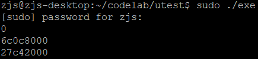
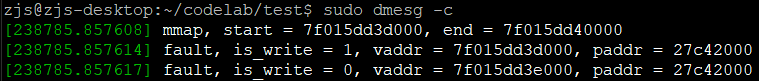

在《混合内存系统hybridmem（一）——使用mmap与page fault为应用程序分配内存》中我提到，大部分的内存分配器都是通过mmap()的私有匿名映射向系统索要内存页，形如下面的代码：
void* block = mmap(NULL, size, PRTO_READ | PROT_WRITE, MAP_PRIVATE | MAP_ANONYMOUS, -1, 0);
而我在打开我的设备文件/dev/hybridmem时，却用的是共享映射：
int fd = open("/dev/hybridmem", O_RDWR);
void* block = mmap(NULL, size, PRTO_READ | PROT_WRITE, MAP_SHARED, fd, 0);
这里我也疑惑过。最初使用MAP_SHARED只是因为共享映射容易理解，而且hybridmem.c的代码不会出错。如果保持hybrimdmem.c的代码不变，而把test.c中的
char* base = mmap(NULL, PAGE_SIZE * 3, PROT_READ | PROT_WRITE, MAP_SHARED, fd, 0);
改为
char* base = mmap(NULL, PAGE_SIZE * 3, PROT_READ | PROT_WRITE, MAP_PRIVATE, fd, 0);
那么就会出现这样的状况：


两次page fault分配了相同的物理页，而两次的物理页都没被应用程序使用。显然，page fault中分配的物理页立即就被释放了。我想这个就是MAP_PRIVATE的效果——kernel调用驱动的page fault，只是请求驱动程序告诉kernel这个page中的数据是怎样的，而不是直接把page fault返回的页拿去用。因此，page fault返回了一个页之后，kernel把这个页中的数据copy到另一个早已分配好的页里面，然后就把page fault返回的页释放了。最后插入应用程序地址空间的是kernel早已分配好的那个页。
可是我不死心啊。因为如果使用了MAP_SHARED，那么就无法利用Copy on Write(COW)特性了。如果返回给内存分配器的页都是MAP_SHARED页，那么Redis在fork一个子进程后，就无法利用COW获取那一瞬间的数据快照了。父进程对内存的所有改动对子进程都是可见的了。
后来，我发现struct vm_fault有一个字段cow_page，也是一个指向struct page的指针。我想到私有映射本质上就是执行了一次COW，那么填充这个字段，是否能够让kernel直接使用page fault返回的页呢？于是我把hybridmem.c中的vma_fault()改成这样：
static int vma_fault(struct vm_fault* vmf)
{
struct page* page = alloc_page(GFP_HIGHUSER_MOVABLE | __GFP_ZERO);
if(!page)
return VM_FAULT_SIGBUS;
printk("vmf->page = %p, vmf->cow_page = %p\n", vmf->page, vmf->cow_page);
vmf->page = page;
vmf->cow_page = page;
get_page(page);
printk("fault, is_write = %d, vaddr = %lx, paddr = %lx\n",
vmf->flags & FAULT_FLAG_WRITE, vmf->address, (size_t)virt_to_phys(page_address(page)));
return 0;
}
运行MAP_PRIVATE版本的test.c，看到应用程序输出：
0 776eb000 2dea000
而驱动程序输出：
[239927.160604] mmap, start = 7f21cb79d000, end = 7f21cb7a0000 [239927.160611] vmf->page = (null), vmf->cow_page = 0000000039423b6a [239927.160613] fault, is_write = 1, vaddr = 7f21cb79d000, paddr = 776eb000 [239927.160616] vmf->page = (null), vmf->cow_page = (null) [239927.160617] fault, is_write = 0, vaddr = 7f21cb79e000, paddr = 2dea000
可以发现：
- vmf->page作为输出字段，始终是null；
- 最终插入应用程序地址空间的，确实就是vmf->cow_page指向的页，而且可以在page fault中修改之；
- 如果page fault是写操作，那么cow_page是在page fault之前就分配好的，如果是读操作，那么cow_page为空。
代码中，使用get_page()是为了增加page的引用计数，因为vmf->page和vmf->cow_page都指向了该page。另外，代码中应该检测vmf->cow_page是否为空，不为空则要先释放page。因此，上面代码中，导致了物理页0000000039423b6a（当然，这个struct page的指针，而不是页的物理地址）内存泄漏了。于是代码改为这样：
static int vma_fault(struct vm_fault* vmf)
{
struct page* page = alloc_page(GFP_HIGHUSER_MOVABLE | __GFP_ZERO);
if(!page)
return VM_FAULT_SIGBUS;
printk("vmf->page = %p, vmf->cow_page = %p\n", vmf->page, vmf->cow_page);
vmf->page = page;
if(vmf->cow_page)
__free_page(vmf->cow_page);
vmf->cow_page = page;
get_page(page);
printk("fault, is_write = %d, vaddr = %lx, paddr = %lx\n",
vmf->flags & FAULT_FLAG_WRITE, vmf->address, (size_t)virt_to_phys(page_address(page)));
return 0;
}
对于单进程的mmap()就如同预期了。这样就利用了MAP_PRIVATE自动支持COW了~为了验证，我把test.c改为这样：
#include <fcntl.h>
#include <stdio.h>
#include <assert.h>
#include <stdint.h>
#include <stdlib.h>
#include <string.h>
#include <unistd.h>
#include <sys/mman.h>
#define PAGE_SIZE 4096
size_t virtual_to_physical(size_t addr)
{
int fd = open("/proc/self/pagemap", O_RDONLY);
if(fd < 0)
{
printf("open '/proc/self/pagemap' failed!\n");
return 0;
}
size_t pagesize = getpagesize();
size_t offset = (addr / pagesize) * sizeof(uint64_t);
if(lseek(fd, offset, SEEK_SET) < 0)
{
printf("lseek() failed!\n");
close(fd);
return 0;
}
uint64_t info;
if(read(fd, &info, sizeof(uint64_t)) != sizeof(uint64_t))
{
printf("read() failed!\n");
close(fd);
return 0;
}
if((info & (((uint64_t)1) << 63)) == 0)
{
printf("page is not present!\n");
close(fd);
return 0;
}
size_t frame = info & ((((uint64_t)1) << 55) - 1);
size_t phy = frame * pagesize + addr % pagesize;
close(fd);
return phy;
}
int main()
{
int fd = open("/dev/hybridmem", O_RDWR);
assert(fd > 0);
char* base = mmap(NULL, PAGE_SIZE * 3, PROT_READ | PROT_WRITE, MAP_PRIVATE, fd, 0);
assert(base != MAP_FAILED);
strcpy(base, "hello");
printf("%d\n", *(base + PAGE_SIZE + 7));
printf("%lx\n", virtual_to_physical((size_t)base));
printf("%lx\n", virtual_to_physical((size_t)base + PAGE_SIZE));
pid_t pid = fork();
if(pid < 0)
exit(1);
else if(pid > 0)
{
usleep(100000);
printf("%s\n", base);
printf("I am father, vaddr %lx map to paddr = %lx\n",
(size_t)base, virtual_to_physical((size_t)base));
}
else
{
strcpy(base, "world");
printf("I am child, vaddr %lx map to paddr = %lx\n",
(size_t)base, virtual_to_physical((size_t)base));
}
return 0;
}
test.c的输出是：
0 9cef9000 9bbc0000 I am child, vaddr 7f9df6f5e000 map to paddr = 622d000 hello I am father, vaddr 7f9df6f5e000 map to paddr = 9cef9000
可见，子进程修改了第一页的数据，触发了COW，于是子进程的第一页被重新映射到了物理地址622d000，而父进程的第一页依旧使用最初的9cef9000。而且，父进程读base所在位置的字符串，依旧是"hello"，也说明了COW确实起效了！
就在我高兴的时候，驱动程序的输出让我有点慌：
[427186.886569] mmap, start = 7f9df6f5e000, end = 7f9df6f61000 [427186.886575] vmf->page = (null), vmf->cow_page = 00000000992a22f4 [427186.886577] fault, is_write = 1, vaddr = 7f9df6f5e000, paddr = 9cef9000 [427186.886580] vmf->page = (null), vmf->cow_page = (null) [427186.886581] fault, is_write = 0, vaddr = 7f9df6f5f000, paddr = 9bbc0000
为啥只触发了两次page fault？结合test.c的输出，可以确定这两次page fault都是父进程还没fork()前触发的。那么子进程的COW页不是我的驱动程序的page fault分配的？可以肯定，kernel直接为子进程分配了页，并拷贝数据。
虽然并不会引起任何功能上的问题，但是导致我无法干预COW页的来源。试想，在Redis做后台RDB时，如果父进程修改了一个NVM页，导致COW，那么子进程使用本来的NVM页，而父进程则会使用一个新的DRAM页。但是合理的做法是给父进程分配NVM页。因为父进程之前之所以使用NVM页，一定是因为该页比较冷。当然，这不会造成太大的问题，毕竟在下一轮冷热页迁移时，会被重新迁移到NVM页。
于是，COW问题也有了答案：
为了兼顾MAP_SHARED与MAP_PRIVATE，vma_fault()应该这么写：
static int vma_fault(struct vm_fault* vmf)
{
struct vm_area_struct* vma = vmf->vma;
struct page* page = alloc_page(GFP_HIGHUSER_MOVABLE | __GFP_ZERO);
if(!page)
return VM_FAULT_SIGBUS;
vmf->page = page;
if(!(vma->vm_flags & VM_SHARED))
{
if(vmf->cow_page)
__free_page(vmf->cow_page);
vmf->cow_page = page;
get_page(page);
}
printk("fault, is_write = %d, vaddr = %lx, paddr = %lx\n",
vmf->flags & FAULT_FLAG_WRITE, vmf->address,
(size_t)virt_to_phys(page_address(page)));
return 0;
}
当然，我后面也发现了一些出乎意料的现象，就是把上面test.c中的MAP_PRIVATE改为MAP_SHARED之后：
[434786.045267] mmap, start = 7f1b9c7ce000, end = 7f1b9c7d1000 [434786.045273] fault, is_write = 1, vaddr = 7f1b9c7ce000, paddr = b8d61000 [434786.045276] fault, is_write = 0, vaddr = 7f1b9c7cf000, paddr = 98b1e000 [434786.045429] fault, is_write = 1, vaddr = 7f1b9c7ce000, paddr = 656ec000
MAP_SHARED模式下反而会触发三次page fault，前两次是fork之前的，第三次是子进程修改第一个页时触发的。我过去以为，MAP_SHARED就会直接共享了，驱动程序无法感知。原来并不是这样。于是，MAP_SHARED模式下，倒是有机会控制COW页的来源，但是，难以定位到需要拷贝的页！比如Redis做后台RDB，fork了一个子进程后，父进程修改一个页并不会触发COW。当子进程需要读取数据时，在子进程上下文中触发了page fault。驱动程序处理page fault时，如何在父进程的地址空间中查找对应的页以拷贝过来呢？如果进程关系更加复杂，那么要自己管理进程查找、关联等一系列问题，几乎不可能。